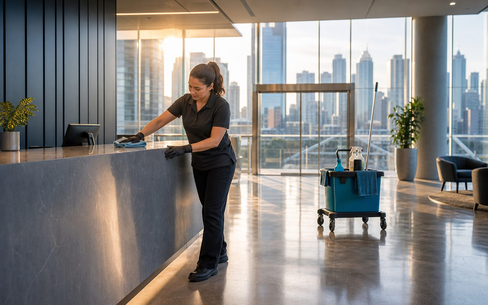

Brisbane
Primary service base for commercial cleaning, floor care, window cleaning, and specialised cleans for offices, clinics, retail, and shared facilities.
We focus on a practical local service area so scheduling, communication, and repeat cleaning visits stay reliable for nearby businesses.

Staying local helps keep commercial cleaning practical. It makes quote visits easier, keeps repeat schedules more reliable, and means we can respond sensibly when a client needs a one-off clean or change in scope.
Primary service base for commercial cleaning, floor care, window cleaning, and specialised cleans for offices, clinics, retail, and shared facilities.
Cleaning support for offices, professional suites, retail premises, and commercial spaces that need a regular, presentable standard.
Regular and one-off cleaning for local business premises, common-use facilities, small offices, and customer-facing spaces.
Commercial cleaning scopes for workspaces, retail sites, clinics, consulting rooms, and shared amenities.
Routine workplace cleaning and periodic service support for nearby businesses, staff areas, and business amenities.
Cleaning for office spaces, light commercial sites, warehouses with staff facilities, and practical business areas.
Support for presentation cleaning, shared areas, commercial amenities, reception spaces, and periodic cleaning needs.
Service availability for commercial sites by scope, timing, access, and cleaning frequency. Send the suburb and site type to check fit.
If your suburb is close to these areas but not listed, get in touch. We can usually confirm availability once we know the site type, cleaning frequency, access details, and preferred timing.
Commercial cleaning is easier to run well when travel time, parking, access, and business hours are planned from the beginning. We keep the service area focused so regular clients are not left waiting around unreliable routes.
For new enquiries, the quickest path is to send the suburb, business type, approximate size, and whether you need regular cleaning or a one-off job.
Tell us where the site is and what type of commercial space you need cleaned.
Let us know whether it is office cleaning, floor care, window cleaning, specialised work, or a mix of services.
We check whether the job suits our local route and what timing makes sense for your business.
For regular commercial cleaning, the suburb is only one part of the decision. The route, access time, parking, scope, and cleaning frequency all affect whether the service can be delivered reliably.
Recurring clients usually work best when the site is close to our local route and the access requirements are straightforward.
Some jobs are still possible outside the core suburbs, but they may depend on timing, scope, and whether the route makes sense.
A short, clear enquiry helps us confirm quickly whether we can service the site and what kind of cleaning plan makes sense.
Send your address or suburb and the cleaning service you need.